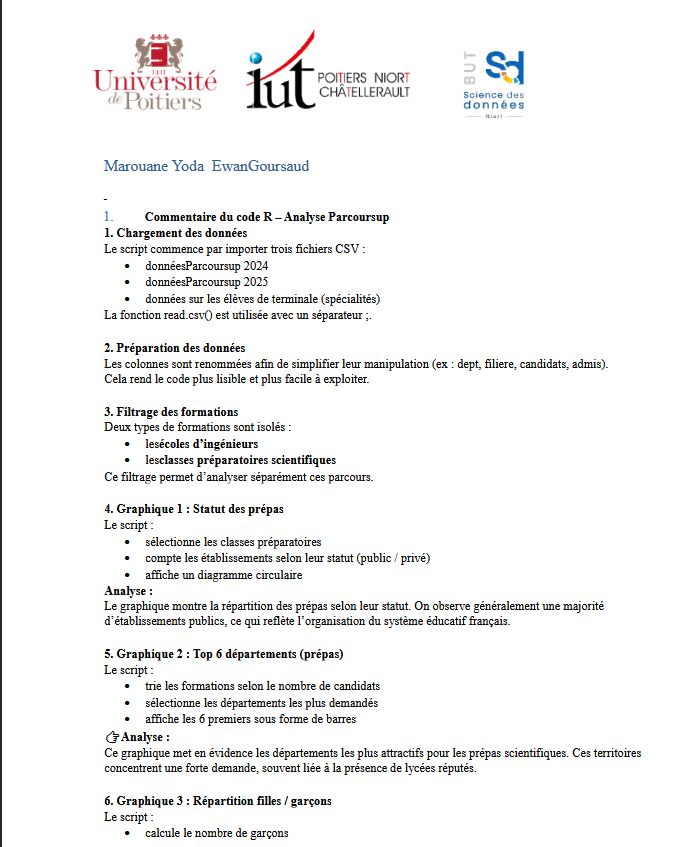
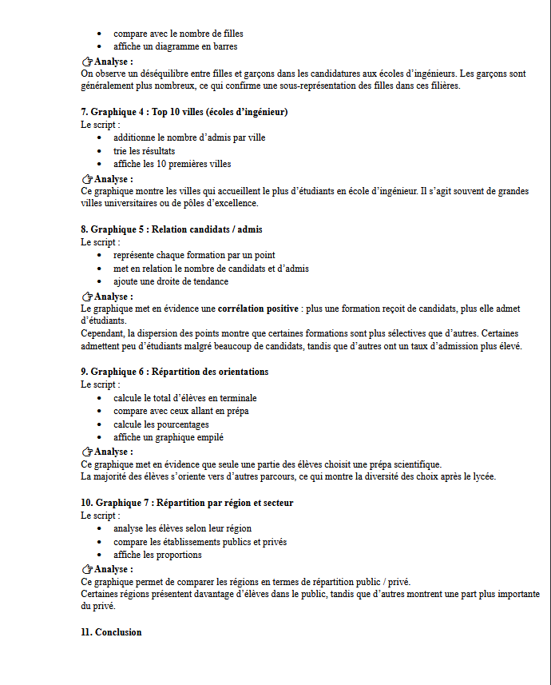
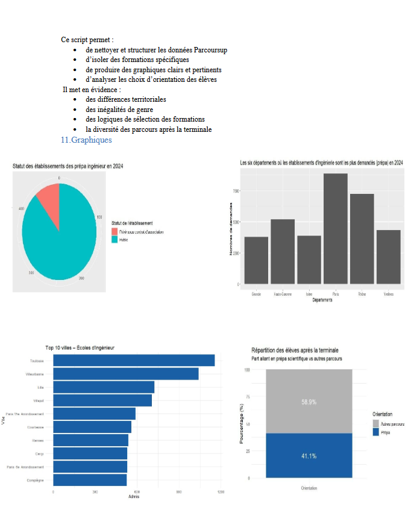
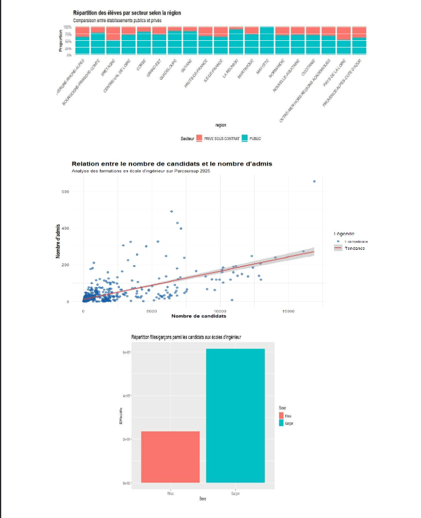
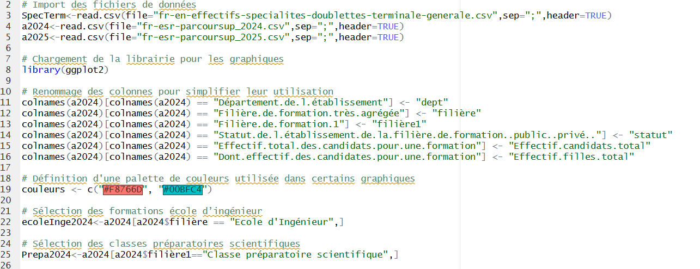
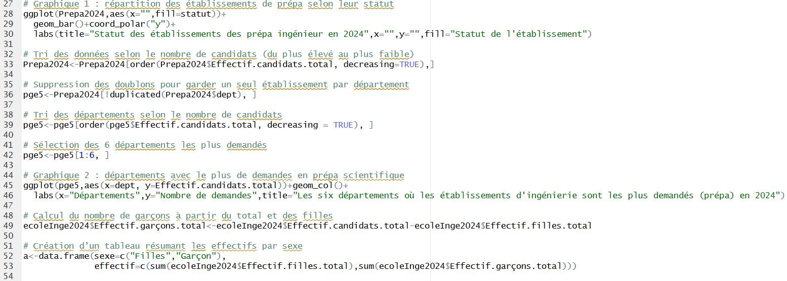

Cette SAE avait pour objectif l'utilisation de la librairie "ggplot2" sur R, une librairie spécialisée dans la création de graphiques plus poussés que ce que propose de base le langage de programmation.
Le travail consistait à analyser les données issues de Parcoursup lors des années 2024 et 2025. Nous devions, avec Marouane YODA, trouver une problématique liée aux données et y répondre notamment via des graphiques. Chaque graphique devait être construit grâce à "ggplot2" et devait être intéressant à étudier.
Notre problématique concernait les étudiants qui choisissaient les écoles d'ingénierie ou en classe préparatoire d'ingénierie au cours de ces deux années. Nous avions établi des graphiques comme par exemple sur les villes où les établissements étaient les plus demandés, ou encore le statut des établissements choisis.
Le rendu final était composé d'un rapport ainsi que du code R de création des graphiques. Un fichier recensant les prompts envoyés à l'IA était également demandé, afin de vérifier la bonne compréhension du travail.